Elexon's indicated demand and generation reach 15 to 42 hours ahead, and the study found no table that maps their zones to NGED's licence areas
Bottom line: Elexon's INDDEM and INDGEN reach at most 42 hours ahead, and the study found no table that maps their regions to NGED's licence areas, so neither series is a ready input to a forecast of those areas. A published mapping from the series' regions to supply points, or an explanation of the gap between INDGEN and the sum of its Physical Notifications, would change that answer. The study ran no forecast, and tested neither series against NGED's own telemetry.
This study describes two Elexon series, Indicated Demand (INDDEM) and Indicated Generation (INDGEN), beside the settled energy that each of Great Britain's 14 Grid Supply Point (GSP) groups takes from the transmission system. Elexon runs the settlement of Great Britain's electricity market, which is the accounting of who generated and used how much energy. The transmission system is the high-voltage network that connects large power stations and carries power to the distribution networks, and a GSP group is the part of the distribution networks that one region's connections to the transmission system supply. INDDEM and INDGEN sum the Physical Notifications (PNs) that Balancing Mechanism Units (BMUs) submit to the system operator. A BMU is a generator, battery, interconnector, or group of customers' demand that trades with the system operator. A PN is the level that the BMU's operator says it plans to deliver. INDDEM sums the PNs of the BMUs that plan to import, and INDGEN sums the PNs of the BMUs that plan to export. Elexon publishes both for the whole of Great Britain and for 17 overlapping regions, called boundaries. The study downloads 13 months of each series, and looks at whether the series carry a regional signal that could help a forecast of the four licence areas of National Grid Electricity Distribution (NGED). The study makes no forecast, runs no significance test, and says nothing about whether either series improves a forecast.
- Do INDDEM and INDGEN reach far enough ahead to help a forecast of the next 14 days? Only the
first 15 to 42 hours.
- Elexon republishes each series every half-hour, and each publication is called an issue. An issue reaches 15 to 42 hours ahead of its publication time, with 98% of issues reaching 17.7 to 41.2 hours (Reach).
- Elexon publishes an issue in 47 of the 48 half-hour slots of a UTC day. On 16 of 396 days, some of those issues are missing (Reach).
- Can the regional series be recovered from the boundaries Elexon publishes? Yes, if the table
of zones in Elexon's 2012 circular still holds.
- A circular of 2012 lists which of 17 non-overlapping study zones make up each boundary. The recovered zones have the expected sign (INDDEM negative, INDGEN positive) in all but 26 of 644,640 zone values, one for each zone, half-hour, and series (Recovering the zones).
- A fit that matches each zone's INDDEM to the PNs of groups of BMUs places each of 10 interconnectors in the region where it lands (Mapping).
- Do the sampled PNs add up to INDDEM and INDGEN? INDDEM yes, once the BMUs of each
interconnector are netted, and INDGEN nearly.
- Over four sample days, the sum of every BMU's PN reproduces INDDEM's national total to within 5 MW in 125 of 192 half-hours, and to within 276 MW in all (Summing the PNs).
- INDGEN differs from the sum of the sampled export PNs by a median of −17 MW, from 375 MW below to 175 MW above. The study did not find why (Summing the PNs).
- Do the GSP groups line up with the zones? Not in a way the study could show.
- Eight of the 14 groups stay in one zone in all five fits, which are one fit on all four sample
days and four fits that each leave one day out:
_C(London) in Z14,_M(Yorkshire) in Z8,_N(south Scotland) in Z6,_K(South Wales) in Z9,_H(Southern England) in Z13, and_A,_J, and_Lin Z12. Of the other six,_Pagrees in only two of the five fits (Mapping). - After the shared daily, weekly, and seasonal cycles and the national anomaly are removed, the highest correlation between a GSP group's settled take and a zone's INDDEM is 0.58, for south Scotland, and the highest for an NGED group is 0.32 (Correlations).
- Eight of the 14 groups stay in one zone in all five fits, which are one fit on all four sample
days and four fits that each leave one day out:
- Does a zone's INDDEM match the demand of an NGED licence area? Not in level.
- For each NGED group, the mean INDDEM of the zone with the highest correlation is 0.5 to 1.9 times the group's mean settled take (NGED's four groups).
- National INDDEM is a median 69% of the national demand outturn, so INDDEM covers only part of demand, and the study did not establish why (The unit of AGV).
- In each of the four NGED licence areas, PV_Live's estimate of solar generation equals 9% to 26% of the settled take of that area's GSP group (Embedded solar).
- What the data and methods can support. The page describes 13 months of public data and 4 sampled days of PNs, with no forecast run on either series. The page can support a choice of what to look at next. The page cannot support a claim that either series helps or fails to help a forecast.
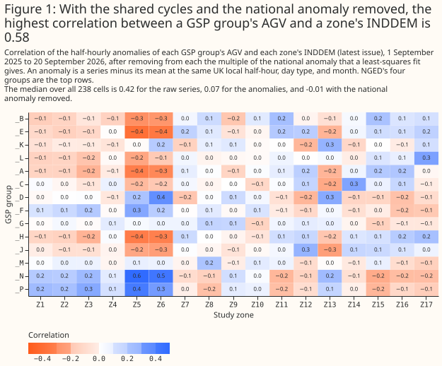
- To forecast NGED's licence areas, treat INDDEM and INDGEN as a national and regional signal that reaches at most 42 hours ahead, and that no table the study found maps to NGED's licence areas. The 2012 circular defines the zones, and no source the study found maps them to GSP groups (Discussion).
- To describe regional demand, start from Elexon's Aggregated GSP Group Take Volume (AGV), the settled take of each GSP group, and not from INDDEM. The download of 9 October 2026 holds AGV for 385 settlement dates. A zone's mean INDDEM does not match a GSP group's mean AGV (Discussion).
How this page was made. The research question came from a human. Everything else — the code behind every result, the analysis, the figures, and the text — was written by Claude, Anthropic's AI model (for this page, Claude Sonnet 5.5). Several independent Claude reviewers have checked the method, the evidence, and the prose adversarially.
Key findings
- An AGV value, doubled, is 93% of the national demand outturn, so AGV is in megawatt-hours per half-hour (The unit of AGV).
- The two series differ in mean level and in the shape of their day from zone to zone, across the 17 zones (What the series look like).
- The 00:00 UTC issue differs from the latest issue by a mean absolute 543 MW for INDDEM and 1,188 MW for INDGEN, with the largest step at 23:00 UK local time under both GMT and BST (The 00:00 UTC issue and the latest issue).
- Five of the 10 interconnectors stay in one zone in all five fits, and the other five in four of the five (Mapping).
- The settled take of the South West group is negative in 362 of 18,478 half-hours, which means the group exported to the transmission system (Embedded solar).
Introduction
INDDEM and INDGEN are published for each half-hour as a sequence of issues. Elexon publishes an issue about every 30 minutes, and the Elexon Insights API serves the issues without a key. An issue holds the half-hours from its publication time to 05:00 UK local time. An issue published before about 11:47 local time ends at 05:00 the next morning. An issue published from about 11:47 local time ends at 05:00 the morning after that. Each half-hour therefore has many vintages, one from each issue that covers it. A forecast that used the series would have to use the issue published before the forecast, so each result below says which issue the result takes.
A boundary is one of 17 regions that the Seven Year Statement of the National Electricity
Transmission System defines by transmission constraints. A study zone is one of 17 non-overlapping
regions that together make up the boundaries. Elexon CVA Change Circular 235
(2012), Appendix 1,
lists which zones make up each boundary. Elexon publishes the national total under the label N,
which is not one of the 17 boundaries. The circular also gives the formulas that recover each zone
from the boundaries. For example, zone Z17 equals boundary B13 (South West), and zone Z11 equals
boundary B17 (West Midlands). The zones follow the transmission network, so a zone need not coincide
with a distribution licence area.
A GSP group is one of 14 regions that settlement uses, and each has a letter from _A to _P,
skipping _I and _O. AGV is Elexon's Aggregated GSP Group Take Volume (data flow CDCA-I029).
AGV gives the energy each group takes from the transmission system in each half-hour, as settled.
Generation embedded in a group's distribution network reduces the group's take, so AGV is net of
embedded generation and is not gross demand. NGED's four licence areas are the groups _B, _E,
_K, and _L.
| GSP group | Area | GSP group | Area |
|---|---|---|---|
_A |
East England | _H |
Southern England |
_B (NGED) |
East Midlands | _J |
South East England |
_C |
London | _K (NGED) |
South Wales |
_D |
North Wales, Merseyside, and Cheshire | _L (NGED) |
South West England |
_E (NGED) |
West Midlands | _M |
Yorkshire |
_F |
North East England | _N |
South and central Scotland |
_G |
North West England | _P |
North Scotland |
| Series | What it is | Geography | Time coverage used | Source |
|---|---|---|---|---|
| INDDEM | Sum of the PNs submitted by the BMUs that plan to import, MW, negative | National total and 17 boundaries | Issues published 31 August 2025 to 30 September 2026 | Elexon Insights API |
| INDGEN | Sum of the PNs submitted by the BMUs that plan to export, MW | The same | The same | Elexon Insights API |
| AGV | Settled energy a GSP group takes from the transmission system, MWh per half-hour | 14 GSP groups | Settlement dates 1 September 2025 to 20 September 2026, SF settlement run |
Elexon Open Settlement Data |
| PV_Live | Estimated solar generation, MW | NGED's four distribution licence areas | 1 September 2025 to 30 September 2026 | Sheffield Solar PV_Live |
| Sampled PNs | Final PNs of every BMU, as MW segments | About 2,500 BMUs | Four Wednesdays, 192 half-hours | Elexon Insights API, dataset PN |
Data and methods
All numbers on this page are exploratory. The study names no planned contrasts, because the study tests no hypothesis. The study runs no significance test, so no interval on this page claims significance. A correlation describes about 18,500 half-hours of 13 months. The correlation does not say how the same correlation would differ in another year.
INDDEM is published negative for imports, and AGV is positive for imports. The study reverses INDDEM's sign wherever a figure or a comparison puts INDDEM beside AGV or beside INDGEN, and each caption says so.
The study keeps two views of each target half-hour. The latest view takes the latest issue published at or before the half-hour starts. The 00:00 UTC view takes the latest issue published at or before 00:00 UTC on the target's UTC day, which is the issue published at about 23:47 UTC on the day before. Both views are lookups as of a cut-off, so neither uses a value published after its cut-off. Unless a figure says otherwise, a figure uses the latest view.
The study recovers the zones by least squares on the circular's table. Least squares finds the zone values whose boundary sums come closest to the published boundary values. Zone Z12 belongs to no boundary and appears only in the national total, so the 17 boundaries alone cannot recover it. The study therefore solves the 18 equations (the national total and 17 boundaries) for the 17 zones. The 18 equations outnumber the 17 unknown zones by one, so the table also implies an identity between boundaries that the study checks: B16 minus B11 must equal B9 minus B17 minus B8, because both sides equal zone Z10.
AGV is the SF settlement run, converted to megawatts. Elexon publishes seven settlement runs
for each settlement period, and each later run revises the values of the earlier runs. The runs are
II (interim initial), SF (initial settlement), R1, R2, and R3 (reconciliation), RF (final
reconciliation), and DF (dispute final). A settlement period has one row for every run published so
far. Taking the SF run puts the whole window on one vintage. The SF run appears about 20 days
after the settlement date, so the download of 9 October 2026 holds SF rows up to 20 September
2026. The unit of AGV
establishes that each AGV volume is in megawatt-hours, so multiplying by 2 gives the mean megawatts
of the half-hour. An import row is positive and an export row is negative.
An anomaly of a series is the series minus its mean at the same UK local half-hour, the same day type (weekday or weekend), and the same month. Every demand series shares the daily, weekly, and seasonal cycles, so correlations of the raw series sit high between any two demand series. Subtracting only a mean daily profile, which is the series' mean at each UK local half-hour of the day, removes the daily cycle but not the weekly and seasonal ones. Even the anomalies share a national component. The study therefore fits each series' anomaly to its own national anomaly by least squares, and subtracts the fitted multiple of the national anomaly. The national anomaly of AGV is the sum of the 14 groups' anomalies, and the national anomaly of INDDEM is the sum of the 17 zones' anomalies.
The sum of the sampled PNs is a time-weighted mean of each BMU's notified level, with the BMUs of each interconnector netted. The PN of a BMU is a sequence of segments that tile the settlement period, and the level changes linearly between the two ends of a segment. The study averages each segment's two end levels, weights by the segment's duration, and sums over the BMUs of one netting group. A netting group is one BMU, or all the BMUs of one interconnector, because an interconnector's BMUs trade in both directions in one half-hour. The study then sums the negative netting groups as imports and the positive netting groups as exports. Each BMU belongs to one GSP group in Elexon's BMU register, if the register gives a GSP group for that BMU.
The study fits the zones' shares by non-negative least squares. The fit groups the BMUs into 25
columns: the 14 GSP groups, the 10 interconnectors, and none, the BMUs that the register gives no
GSP group. The fit models each zone's INDDEM as the sum, over the 25 columns, of each column's
summed import PNs times a share. The shares are not negative, and the shares of one column sum to 1
over the 17 zones. The fit uses the half-hours in which the sampled PNs reproduce INDDEM's national
total to within 5 MW. The study then repeats the fit four more times, leaving out one sample day
each time, which gives five fits in all.
PV_Live labels each half-hour by its end, and the study relabels each half-hour by its start. AGV, INDDEM, and the national demand outturn label each half-hour by its start, so the relabelling puts PV_Live on the same convention. The relabelling is checked in the embedded solar section.
Results
AGV is in megawatt-hours per half-hour, and INDDEM is 69% of national demand
AGV, doubled, is 93% of the national demand outturn, with a correlation of 0.996 over 18,480 half-hours, so AGV is in megawatt-hours per half-hour. If AGV were in megawatts, the ratio would be near 0.46. The national demand outturn is Elexon's initial estimate of national demand, which Elexon publishes as INDO. The ratio has a 1st to 99th percentile range of 0.87 to 0.96, and its median by UTC hour of day stays between 0.92 and 0.93. INDO is also net of embedded generation, so the study does not attribute the 7% gap to embedded generation. The study did not identify the cause of the 7% gap, which may be transmission losses or demand connected directly to the transmission system.
National INDDEM is a median 69% of INDO, with a correlation of 0.78 over 18,958 half-hours.
Supplier base BMUs, which each supplier registers for the demand of its customers in one GSP group
and whose IDs start with 2__, hold 85% of the sampled import PNs after the interconnectors are
netted. The study did not check how much of demand the supplier base BMUs leave out. INDDEM covers
only part of national demand, so a comparison of a zone's INDDEM with a group's AGV is a comparison
of different quantities.
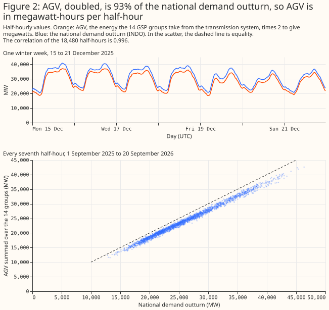
The 17 zones recovered from the boundaries have the expected sign
The zones recovered from the boundaries have the expected sign in all but 26 of 644,640 zone values, one for each zone, half-hour, and series. The expected sign is negative for INDDEM and positive for INDGEN. Both series are whole megawatts, so the study allows 1 MW of rounding. The 26 exceptions are 9 half-hours of INDDEM and 17 of INDGEN, all in zone Z10. The extra identity, B16 minus B11 equals B9 minus B17 minus B8, holds to within 2 MW in every half-hour. The two checks test only part of the circular's table, because the system has one equation more than unknowns. The interconnector fit in the mapping section tests the table further.
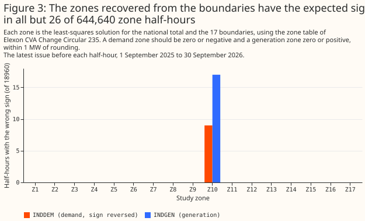
INDGEN averages 11 GW more than INDDEM, and the zones differ in size and in the shape of their day
National INDDEM averages 18.1 GW and INDGEN 29.4 GW over the 13 months, and both series follow the daily cycle. Both series are highest in winter. The monthly mean of INDDEM peaks at 21.5 GW in January 2026 and is lowest at 15.4 GW in May 2026. The monthly mean of INDGEN peaks at 36.1 GW in January 2026 and is lowest at 24.5 GW in July 2026. INDGEN exceeds INDDEM by 11.3 GW on average. INDDEM leaves out part of demand, as the unit of AGV shows. The study did not find what explains the rest of the 11.3 GW difference.
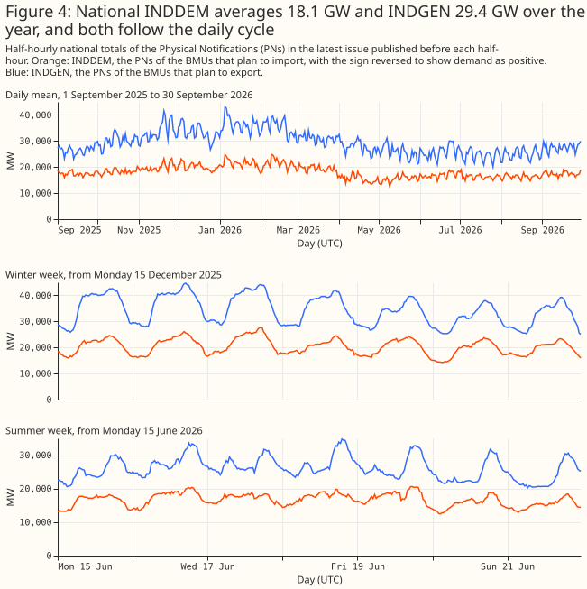
The 17 zones differ in size and in the shape of their day. Zone Z12 holds the most INDDEM, 5.3 GW on average. No boundary equals zone Z12. INDDEM exceeds INDGEN in five zones (Z5, Z11, Z12, Z14, and Z17) and falls short of INDGEN in the other 12. Zone Z17, the South West boundary B13, holds 555 MW of INDDEM and 501 MW of INDGEN on average.
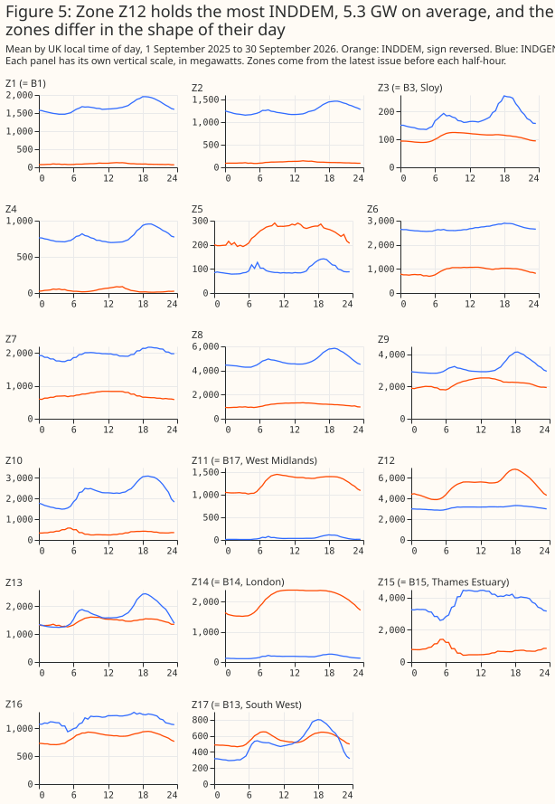
Each published issue reaches 15 to 42 hours ahead
An INDDEM issue reaches 15 to 42 hours ahead, far short of the 14 days of the forecast horizon. The reach of an issue is the time from publication to the end of the last half-hour in the issue. The 1st to 99th percentile range of the reach is 17.7 to 41.2 hours, and 400 of the 18,604 regular issues reach under 18 hours. Every issue ends at 05:00 UK local time. An issue published at 00:00 UK local time reaches a median 28 hours, and the reach falls by about one hour for each hour later that an issue is published, down to 19 hours for an issue published at 10:00 local time. From 11:47 UK local time, the earliest time the study saw a long issue published, each issue runs to 05:00 two mornings later. The first of those issues reaches a median 40 hours, and the reach then falls again.
Elexon publishes an issue in 47 of the 48 half-hour slots of a UTC day, and on 16 of the 396 UTC days some of those issues are missing. Elexon publishes no issue in the half-hour that starts at 08:30 UK local time. The day with the fewest issues has an issue in 42 slots.
One issue holds only half-hours that are already past. The issue published at 08:31 UTC on 3 November 2025, in the half-hour that otherwise never has an issue, holds 61 half-hours, the last of which ends 3.5 hours before the issue was published. Neither view takes the issue, because the issue was published after every half-hour it holds, and so after both cut-offs.
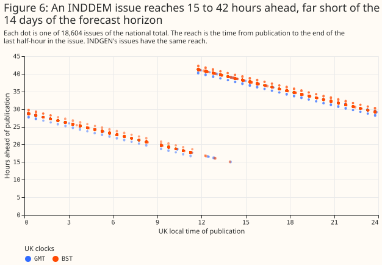
The 00:00 UTC issue differs from the latest issue, with its largest step at 23:00 UK local time
The 00:00 UTC issue differs from the latest issue by a mean absolute 543 MW (INDDEM) and 1,188 MW (INDGEN), with the largest step at 23:00 UK local time under both GMT and BST. The mean absolute difference is 3% of INDDEM's mean and 4% of INDGEN's. Under GMT, from 23:00 local time to midnight, the 00:00 UTC issue is 2.4 to 2.6 GW less negative than the latest issue for INDDEM, and 5.0 to 5.7 GW lower for INDGEN. Under BST, the step covers 23:00 to 01:00 local time, and is 2.3 to 2.4 GW for INDDEM and 6.0 to 7.1 GW for INDGEN. Outside 22:00 to 02:00 local time, the mean absolute difference is 428 MW for INDDEM and 856 MW for INDGEN. The next GB trading day starts at 23:00 UK local time. The study did not test whether the start of the trading day explains the step.
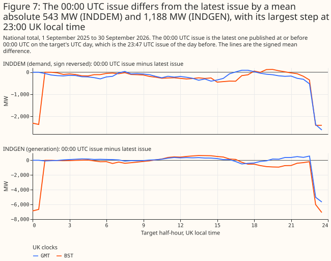
Summed Physical Notifications reproduce INDDEM once each interconnector is netted
The sampled PNs reproduce INDDEM's national total to within 5 MW in 125 of 192 half-hours, and to within 276 MW in all, once the BMUs of each interconnector are netted. Most interconnectors have dozens of trading BMUs, and in one half-hour some of those BMUs import while others export. A sum that splits the BMUs one at a time by sign therefore counts both directions. Netting each interconnector first brings the median gap between INDDEM and the sum of import PNs to 0.05 MW. The 125 half-hours are 41, 26, 24, and 34 on the four days.
INDGEN differs from the sum of the sampled export PNs by a median of −17 MW, from 375 MW below to 175 MW above, and the study did not find what explains the gap. The sampled PNs are the final PNs, which Elexon serves now. Gate closure is one hour before a half-hour starts, and after gate closure a BMU can no longer change its PN. An issue published before gate closure holds earlier PNs, which the study did not sample.
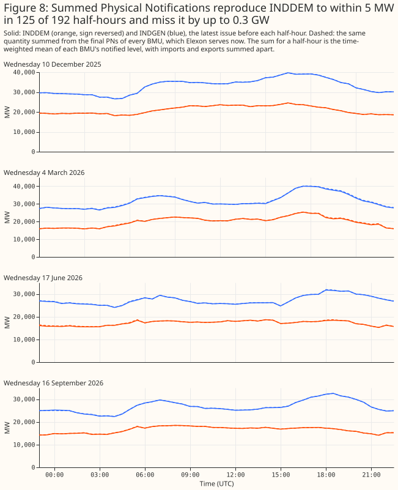
A fit places each interconnector in its landing zone but does not settle the GSP groups
A fit of INDDEM on the netted PNs places each of 10 interconnectors in one zone, and the zone is the region where the interconnector lands. The table gives the zone, the landing region as the interconnector's operator describes it, and the number of the five fits in which the interconnector stays in that zone. The study did not check the landing regions against a table. The result tests the circular's table in a second way, and gives a known answer for the method.
| Interconnector | Zone | Landing region | Fits in that zone |
|---|---|---|---|
| BritNed | Z15 | Isle of Grain, Kent | 5 |
| ElecLink | Z15 | Folkestone, Kent | 4 |
IFA (FRANCE) |
Z15 | Sellindge, Kent | 4 |
| NEMO Link | Z15 | Richborough, Kent | 4 |
| IFA2 | Z16 | Hampshire (south coast) | 4 |
| EWIC | Z9 | Deeside, North Wales | 5 |
| Greenlink | Z13 | Pembrokeshire | 5 |
| Moyle | Z6 | Ayrshire | 5 |
| North Sea Link | Z7 | Blyth, Northumberland | 4 |
| Viking Link | Z10 | Lincolnshire | 5 |
The same fit does not settle the GSP groups. Eight groups stay in one zone in all five fits:
_C (London) in Z14 (the London boundary), _M (Yorkshire) in Z8, _N (south and central
Scotland) in Z6, _K (South Wales) in Z9, _H (Southern England) in Z13, and _A, _J, and _L
in Z12. The circular's table does not say where Z12 lies, and the study did not check the other
placements against a map, so the study cannot tell whether the placements are right. Five more
groups stay in one zone in four of five fits, including _D (North Wales, Merseyside, and Cheshire)
in Z12, and _P (North Scotland) changes zone in three of five fits. Zone Z11, which equals the
West Midlands boundary, takes _E with a fitted share of 0.32. The fit has 125 half-hours of four
days, 25 columns, and 17 zones.
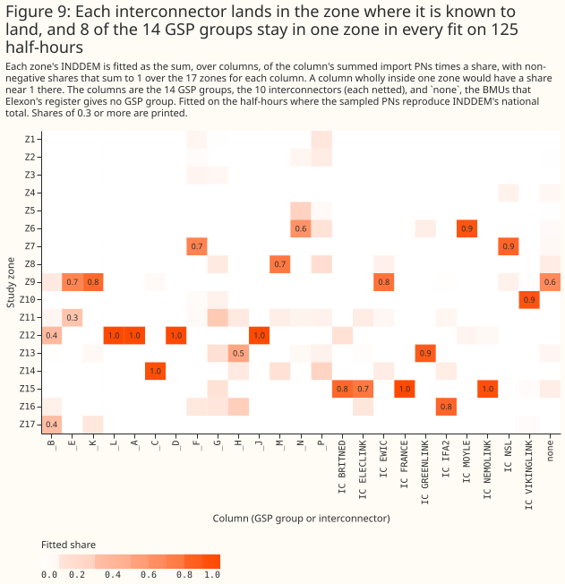
After the shared components are removed, no NGED group correlates above 0.32 with a zone
After the shared daily, weekly, and seasonal cycles and the national anomaly are removed, the
highest correlation between a GSP group's AGV and a zone's INDDEM is 0.58, and the median over all
238 pairs of a GSP group and a zone is −0.01. The pair with the highest correlation is _N (south
and central Scotland) with Z5.
For NGED's four groups, the highest correlation is 0.18 to 0.32, and two of the four correlate
most with the zone that equals the boundary of the same name. The highest correlation is 0.22 for
_B (East Midlands) with Z11, 0.18 for _E (West Midlands) with Z11, 0.26 for _K (South Wales)
with Z13, and 0.32 for _L (South West England) with Z17. Z11 is the West Midlands boundary, and
Z17 is the South West boundary.
Removing the shared cycles does most of the work in lowering the correlations, and removing the
national anomaly as well lowers the median from 0.07 to −0.01 and the highest from 0.72 to 0.58.
The median over the 238 pairs is 0.42 for the raw series, 0.07 after removing the cycles, and −0.01
after removing the national anomaly as well. Before the national anomaly is removed, the highest
correlation is 0.72, and the zone with the highest correlation for _B, _E, and _C is Z12, the
zone with the largest mean INDDEM. Over the 91 pairs of GSP groups, the median correlation between
the two groups' AGV is 0.76 for the raw series, 0.77 after subtracting a mean daily profile, and
0.47 after removing the cycles. The national anomaly of AGV follows national demand, with a
correlation of 0.98 with the anomaly of the national demand outturn. The national anomaly of INDDEM
does not: its correlation with the outturn anomaly is 0.13, and it is dominated by the zones that
hold interconnectors, with Z15 covering 28% of its variance and Z7, Z10, and Z9 covering 14%, 14%,
and 13%. The two national anomalies correlate at 0.09. Figure 1, at the top of the page, shows every
pair.
A zone's INDDEM is 0.5 to 1.9 times the mean take of the NGED group it correlates with most
For each NGED group, the mean INDDEM of the zone with the highest correlation is 0.5 to 1.9 times the group's mean AGV. The table gives the means over the half-hours that AGV, the zone, and PV_Live all cover. The levels differ in both directions, and the correlations are low, so the page does not scale either series.
| NGED group | Zone with the highest correlation | Correlation | Mean INDDEM of the zone (MW) | Mean AGV (MW) | Ratio |
|---|---|---|---|---|---|
_B East Midlands |
Z11 | 0.22 | 1,270 | 2,111 | 0.60 |
_E West Midlands |
Z11 | 0.18 | 1,270 | 2,213 | 0.57 |
_K South Wales |
Z13 | 0.26 | 1,457 | 758 | 1.92 |
_L South West England |
Z17 | 0.32 | 556 | 1,039 | 0.54 |
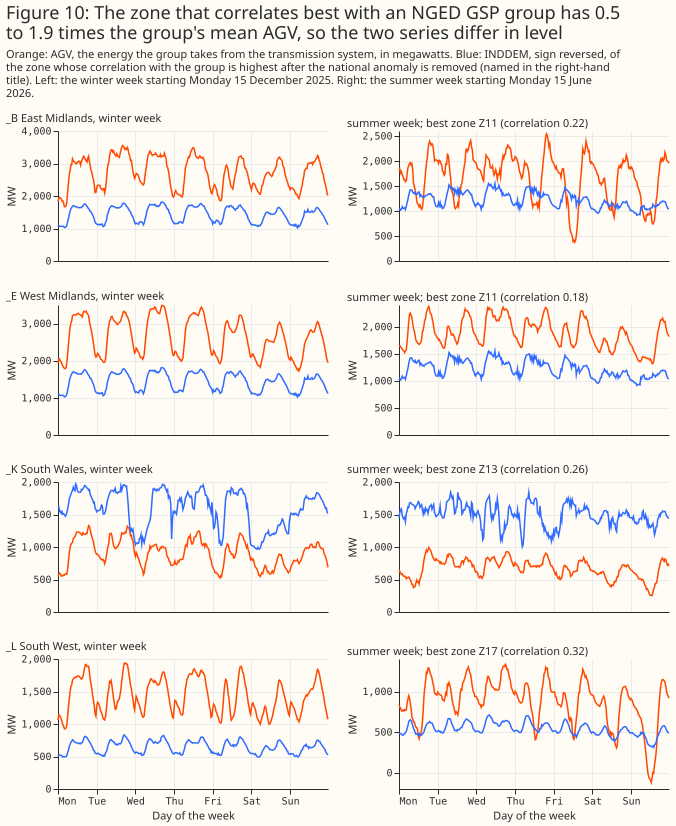
PV_Live's solar equals 9% to 26% of the settled take of NGED's groups
PV_Live's estimate of the solar generation in each NGED licence area equals 9% to 26% of the
group's settled take over the 385 days. The ratio is 9% for the West Midlands (_E), 17% for the
East Midlands (_B), 18% for South Wales (_K), and 26% for the South West (_L). As a share of
AGV plus solar, the figures are 8%, 15%, 15%, and 21%. On midsummer days AGV falls while solar
generation rises. AGV plus solar is not gross demand, because other embedded generation is still
netted out.
Over the whole window, the South West's AGV is negative in 362 of 18,478 half-hours, which means the group exported to the transmission system. The 18,478 half-hours are the ones that AGV, the zone, and PV_Live all cover.
The relabelling of PV_Live from end labels to start labels puts the South West's solar profile at solar noon. After the relabelling, the mean profile of the South West's solar generation in June and July centres on 12:15 UTC, the middle of the half-hour that starts at 12:00 UTC. Solar noon at 3.5° W falls close to 12:15 UTC.
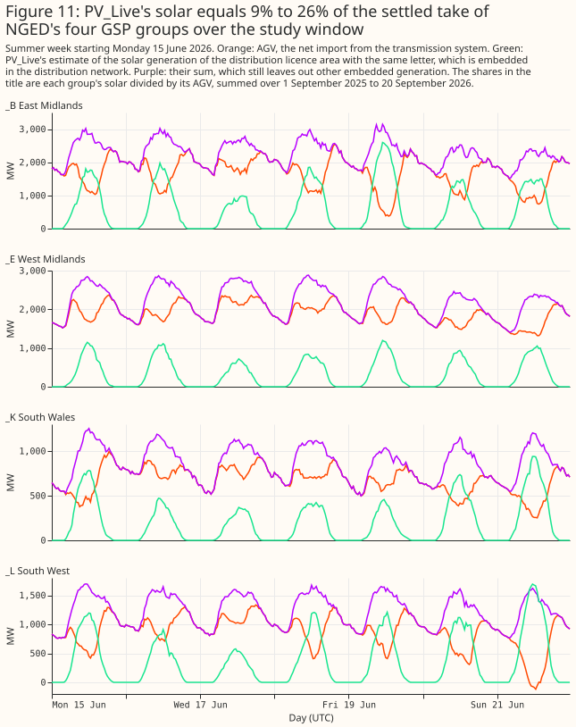
Discussion: what to use
To forecast NGED's licence areas, INDDEM and INDGEN are not a drop-in regional input. The series reach at most 42 hours, so they can inform at best the first 2 days of a 14-day forecast. No source the study found maps the 17 zones to GSP groups or to NGED's Grid Supply Points. The fit on this page leaves most GSP groups unplaced. The sum of the PNs does reproduce INDDEM once interconnectors are netted, so a user could rebuild a zone's INDDEM from the PNs if each BMU's zone were known. Testing either series in a forecast would need that mapping first.
To describe the demand of a GSP group, AGV is the series to start from, but AGV is not available
live. AGV is settled, so the SF run arrives about 20 days after the settlement date. AGV is net
of embedded generation. Adding PV_Live's solar estimate to AGV brings the sum closer to gross demand
for the four licence areas that the study downloaded. A user who needs a live signal would need a
different source.
Three findings would change these recommendations: a published mapping from zones to Grid Supply Points, an explanation of INDGEN's gap of up to 375 MW from the sum of export PNs, or a longer history of regional PNs. The study does not recommend running any forecasting experiment, and leaves that choice to the issue tracker.
Limitations
- The window is a single run of 13 months, and one year is not a sample of years. Every correlation and mean describes that period.
- The PN sample is four Wednesdays. The fit of the zones' shares uses 125 half-hours, and the results may differ on other days. The fit also uses only the half-hours in which the sampled PNs reproduce INDDEM's national total to within 5 MW.
- AGV uses the
SFrun only. A later run would revise the values, and the study did not measure how much. AGV's Estimate Indicator isTon 88% of rows, and Elexon's files do not say what the valueTmeans. - The unit of AGV is established by a ratio to INDO. Elexon does not state the unit in the files, and the 7% gap between AGV and INDO is unexplained.
- The interconnectors' landing regions are the operators' public descriptions. The study did not check them against a table.
- PV_Live estimates and revises. The study records each estimate's update time and does not correct for revisions. The study did not check which solar generation PV_Live's estimate leaves out.
- A correlation of anomalies depends on how the anomaly is defined. The definition removes a mean at the half-hour, day type, and month, and another definition would give other values. The month key pools September 2025 with September 2026.
- The page makes no correction for multiple comparisons. The page reports every group-and-zone correlation, and runs no significance test.
Scope
The page says nothing about whether INDDEM or INDGEN improves a forecast of NGED's substations. The
page does not cover the Insights API's other boundary datasets, the settlement runs other than SF,
GSP-level data finer than the 14 groups, the legacy archive of the Balancing Mechanism Reporting
Service (BMRS), or any year before September 2025. The study reads no NGED telemetry, so the page
names no NGED generator and shows no NGED generator's time series.
Data and code availability
All inputs are public. INDDEM, INDGEN, the PNs, and the national demand outturn come from the Elexon
Insights API, which Elexon publishes under its licence to use BMRS
data.
Contains BMRS data © Elexon Limited copyright and database right 2026. AGV comes from Elexon's Open
Settlement Data, which Elexon announced as open
data.
PV_Live comes from Sheffield Solar. The downloads are
in
studies/market_downloads/,
and the analysis is in
studies/indgen_inddem/.
The tests of the download scripts are in packages/studies/tests/.
Reproducing the figures
uv run python studies/market_downloads/fetch_system_series.py --sources elexon_inddem elexon_indgen --start 2025-08-31
uv run python studies/market_downloads/fetch_agv.py
uv run python studies/market_downloads/fetch_pv_live.py
uv run python studies/market_downloads/fetch_pn_all_bmus_sample.py
uv run python studies/market_downloads/fetch_system_series.py --sources elexon_demand_outturn
uv run python studies/indgen_inddem/build_tables.py
uv run python studies/indgen_inddem/make_charts.py
build_tables.py writes report.md to data/studies/per_study/indgen_inddem/. report.md holds
every number on this page, or the numbers from which a derived number is computed.